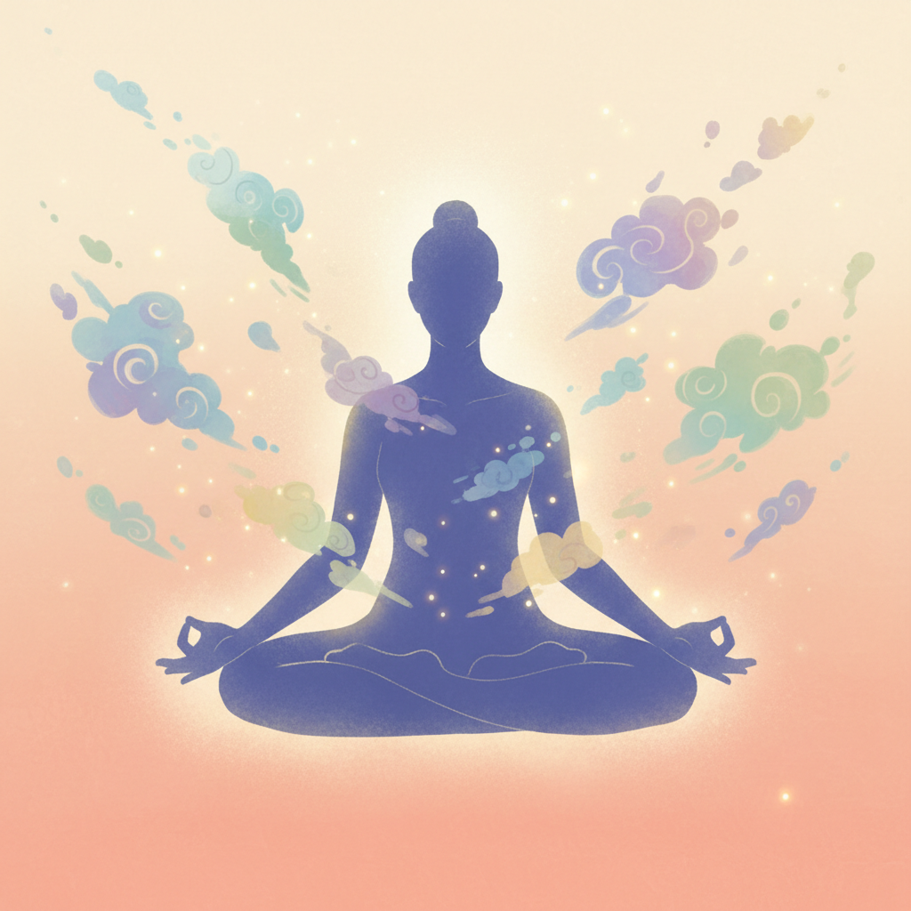

与自己和解
释放内在的自由
此刻的感受是什么？
选择你正在经历的情绪，让我们开始这段自我对话的旅程
😰
焦虑
内心的不安
😠
愤怒
被激发的情绪
😢
悲伤
失落与伤心
😨
恐惧
未知的担忧
😔
自卑
自我怀疑
😞
愧疚
内心的负担
😤
挫败
事与愿违
😶
孤独
无人理解
😒
嫉妒
对比与不甘
😳
羞愧
难以启齿
😫
压力
喘不过气
😕
困惑
迷茫无措
😩
无助
无力改变
😣
后悔
追悔莫及
😖
烦躁
静不下来
💭
其他
自定义
身体有什么感受？
💔
胸闷压抑
🤕
头部紧绷
😣
胃部不适
💪
肩颈紧张
😶
喉咙堵塞
🦴
后背沉重
💗
心跳加速
😮💨
呼吸急促
👐
手心出汗
🦵
四肢无力
😳
面部发热
😬
肌肉紧绷
🥶
手脚冰凉
😵
头晕目眩
✨
其他感受
1/4
你能允许这个情绪存在吗？
🫁
不需要改变它，不需要压抑它，只是单纯地允许这个情绪在这里，就像允许天空中有云朵一样。
2/4
你能放下它吗？
🤲
不是强迫它消失，而是问问自己的内心：我是否有能力让这个情绪离开？
3/4
你愿意放下它吗？
💝
这是一个关于选择的问题。你愿意为这个情绪腾出空间，让它自然地流走吗？
4/4
什么时候放下？
✨
现在？还是继续抱着这个情绪一会儿？选择权始终在你手中。
🌱
释放完成
你今天勇敢面对了情绪，这就是爱自己的开始。每一次释放都是成长的种子。